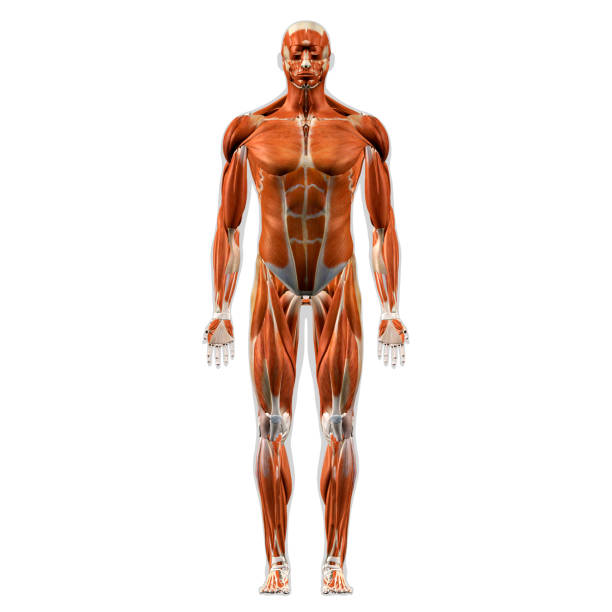

Descripción
El cáncer es un término amplio utilizado para aludir a un conjunto de enfermedades que se pueden originar en casi cualquier órgano o tejido del cuerpo cuando células anormales crecen de forma descontrolada, sobrepasan sus límites habituales e invaden partes adyacentes del cuerpo y/o se propagan a otros órganos.

Causas
El cáncer es causado por mutaciones genéticas que alteran el crecimiento celular normal. Estas mutaciones pueden ser heredadas o provocadas por factores ambientales como el tabaquismo, la exposición a radiación, productos químicos tóxicos, infecciones virales (como el VPH), y la mala alimentación. También puede haber predisposición genética en ciertos tipos de cáncer.
Síntomas
Los síntomas del cáncer varían según el tipo y la localización, pero pueden incluir la aparición de bultos, pérdida inexplicada de peso, fatiga, cambios en la piel, dolor persistente, tos crónica, sangrado inusual o cambios en los hábitos intestinales o urinarios. Los síntomas pueden no aparecer en las primeras etapas de la enfermedad.
Pruebas y exámenes
El diagnóstico del cáncer se realiza a través de varias pruebas, como biopsias (extracción de una muestra de tejido), análisis de sangre, estudios de imágenes (radiografías, tomografías, RM), y exámenes genéticos. Los exámenes de detección, como las mamografías o colonoscopías, son fundamentales para identificar el cáncer en etapas tempranas.
Tratamiento
El tratamiento del cáncer depende del tipo y la etapa en la que se encuentre la enfermedad. Las opciones incluyen cirugía para remover tumores, quimioterapia (uso de medicamentos para destruir células cancerosas), radioterapia (uso de radiación para reducir o eliminar tumores), inmunoterapia y terapia dirigida a las mutaciones genéticas específicas. En algunos casos, se utiliza una combinación de estos tratamientos.
Expectativas
Las expectativas para los pacientes con cáncer varían ampliamente según el tipo de cáncer, la etapa en la que se diagnostica y el tratamiento recibido. Algunos cánceres se curan completamente si se detectan a tiempo, mientras que otros pueden requerir un tratamiento a largo plazo para controlar la enfermedad. Los avances en la investigación han mejorado las tasas de supervivencia, pero el pronóstico depende de muchos factores individuales.
Video relacionado
Para más detalle, pulsa en la zona sobre la que quieres saber más sobre el cáncer
